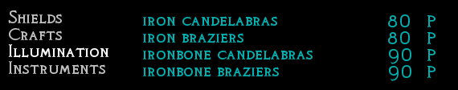
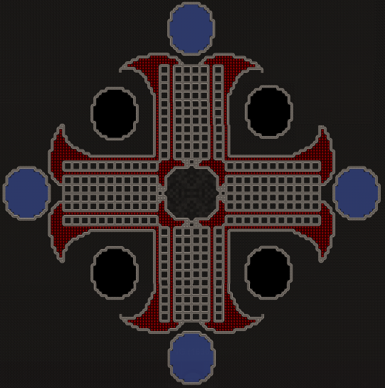

Quicklinks
::: New labors/skills ::: Creature Spawning ::: Battlecries ::: Toys vs Illumination :::
::: Dwarven Guilds ::: Nobles ::: Tools ::: Instruments ::: Food ::: Engravings :::
::: Slabs/Secrets ::: Curses ::: Possessions ::: Cults ::: Diseases ::: Work Accidents ::: Weather ::: Regional Interactions :::
::: Diplomats ::: Combat Logs ::: Languages ::: Standardized Materials :::
::: Arena ::: Font ::: ExtraTilesets ::: Material Guides ::: Orichalcum :::
New labors/skillsThe mod adds a selection of new professions, skills and labors. These are actually just renamed vanilla skills, either unused are rarely used ones. This you have to remember: Soapmaking is done by the chemist. Thresher, Miller and Presser is now done by one skill, the "Presser & Miller". Woodburner and Glazer is now done by one skill, the Oven Operator. Stonecrafter and Potter are combined. Trapper and Poisoner are combined. Stone & Rune Engraver are combined. All new skills can be seen here. They usually have one or more buildings assigned to them. I wont go into too much detail here, because most of them are rather self-explanatory. The building section also lists which labor and skill is used in which building, as do the buildings ingame. Note that the included Therapist can read out these new labors without a problem.
Creature SpawningYou can create creatures and contructs in this mod. Golems are made from dwarves. A brave dwarven volunteer is transformed into a soulless metal soldier at the golem forge. You dont have to do anything, since the reaction automatically targets the worker running the reaction. The Colosseum allows you to fight monsters. For each monster you want to spawn you need one changeling. Pasture it on top of the Colosseum and run the reaction. Other creatures you make yourself. Build landmines and turrets at the Machine Factory, Wards and Guardian at the Temple and Scarecrows in the Craftsdwarf. BattlecriesAll sentient creatures in this mod will identify other sentient creatures they fight against. A dwarf fighting a goblin will know that he is fighting a goblin and yell, threaten or insult him. The text will appear in the combat log, as shown in the example below. These battlecries are only ornamental and have no effect. All texts can be found in the data/speech folder and are very easy to alter yourself. I am always looking for more threats and insults, so if you want to contribute, please do. It is as easy as adding a line to the battlcry_.txt files in data/speech. This change is optional.
Toys vs. IlluminationSince toys are not used in any way by the game I replaced them with another object. The category of "toys" is now "illumination" and includes candelabras, braziers and fireplaces. You can build these items as decorative workshops if you want to. See the building section for more info on that. Everything else is the same, they can be traded, made of rock and metal, can be engraved, used in demands and mandates... just the name and the design changed. There is a script in alpha stage for adding an actual lighting system to DF, to be found here. It is currently not in development, so if you know C++, this is your chance to shine. Yes, I too can do bad puns.  Dwarven GuildsDwarves can be members of guilds. They do learn skills associated with their guild twice as fast. You either get a migrant that is a guild member, or you have your dwarves join one at the guildhall. This will cost 500 gold and will take 1 ingame week for the dwarf to do his apprenticeship. The guild are: *MERCHANT'S GUILD* This dwarf is a member of the high and mighty merchant's guild. Controlling the flow of tradegoods and money all over the dwarven realm, each wealthy fortress will soon see the merchnt's guild arrive. It's members make excellent traders and bookkeepers, as well as ambassadors. *CARPENTER'S GUILD* This dwarf has joined the guild of woodworkers, lumberjacks and bowyers. It's not the most popular guild among dwarves, since the work is mostly outdoors, but the factor that elves hate it with a passion makes more then up for it. *MASON'S GUILD* This dwarf is member of the most prominent of all dwarven guilds, the masons. Working with stone is an age old tradition among dwarven society and the mason's guild has honed this skill to perfection. Members learn masonry, engraving and mining, as well as skills like architecture and archeology. *BEAST WARDEN'S GUILD* This dwarf has joined the society of the beast wardens, a group of dwarves dedicated to the training and control of animals. While not recognized as a real guild be dwarven society, they do make excellent rangers, trappers and animal trainers. Building and maintaining insect hivestocks falls under their responsibility as well. *SMITH'S GUILD* This dwarf is member of the second largest dwarven guild, the smiths. What they lack in numbers in comparison to the mason's guild, they make more then up with their dedication and skill in metalworks. They constantly tend to their furnaces or ovens and metal seems to bend to their will. *JEWELER'S GUILD* This dwarf has proven skill in the fine arts. The members of the jeweler's guild create the finest tradegoods, be it from gems or glass. They are in constant squabbel with the merchant's guild, which controls the taxes on said tradegoods. *CRAFTMAN'S GUILD* This dwarf is a member of the craftman's guild. Most artisans of the smaller industries fall under this category, be it working bone, leather or cloth. The guild even houses the few dwarven scribes and musicians that roam the realm. *FISHERMAN'S GUILD* This dwarf has joined the eccentric guild of fishers. Founded by the self-proclaimed king of the fishers, this guild is watched with distrust by other dwarves. How is sitting next to water, waiting for the fish to come to you a real profession? Regardless of what other dwarves think, the members of this guild have mastered the skill of the waiting game. *FARMER'S GUILD* This dwarf belongs to the guild of farmworkers, millers and cooks. They handle most of the food production, from planting crops and brewing them, over milking and cheesemaking, to butchery and cooking. A basic, but important factor of every fortress. *HEALER'S GUILD* This dwarf is a member of the guild of healers. Mad butchers some might call them, but they do their best to patch unlucky dwarves back together. Enough dwarves owe their lifes to them to establish the healers as a valid, bonafide guild. *ENGINEER'S GUILD* This dwarf is a member of the guild of mechanics, machine operators and siege engineers. All things technical are governed by them. Without the engineer's guild fortresses would lack pumpstacks, trap hallways and other automated defenses. They even allow intrepid inventors to join their ranks. *ALCHEMIST'S GUILD* This dwarf joined the ancient guild of alchemists. While alchemy itself is only a shadow of its former self, in these modern days the guild also welcomes chemists, poisoners and herbalists. There will always be fun about when dwarves handle explosives, acids and poisons, so the guild is blamed for most fortress accidents. And justly so, some might say. *ARCANE DWARF* This dwarf bears a spark of magic in him. Either a rare natural occurence or an expansive magical experiment, either way it enables him to dip into the natural powers that surround us all. He can learn sorcery and the use of magic wands. There are also 4 military groups that can be joined in the military garrison. This costs 2500 gold and also takes 1 week of intensive training. Miliatry groups also learn their associated skills twice as fast as normal dwarves.
*LEGIONNAIRE* Having undergone the garrison training, this dwarf has learned the fundamental rules of war. Legionnaires learn to handle all melee weapons, military tactics, leadership and situational awareness. They are used to pain, have a higher willpower and recuperation then civilians. The legion training also encompasses rigirous fitness exercises, raising their strength. *MARKSMAN* Having undergone the garrison training, this dwarf has learned the fundamental rules of war. Marksmen learn to handle all ranged weapons, military tactics, leadership and situational awareness. They are used to pain, have a higher willpower and recuperation then civilians. Marksmen training also leads to keen eyes and a higher view range. *GUARD* Having undergone the garrison training, this dwarf has learned the fundamental rules of war. Guards excel in using armor and shield and learn military tactics, leadership and situational awareness. They are used to pain, have a higher willpower and recuperation then civilians. Guard training raises their toughness as well. *WRESTLER* Having undergone the garrison training, this dwarf has learned the fundamental rules of war. Wrestler training teaches unarmed combat and doging above all else. They also learn military tactics, leadership and situational awareness. They are used to pain, have a higher willpower and recuperation then civilians, tire slowly and are very agile. All dwarven guilds and military groups show a (*) ingame behind their improved skills. This way you can easily see ingame who is who. This change is optional. IMPORTANT: If you disable dwarven castes, please also disable the guildhall/garrison. Trying to transform a dwarf into a guildmember while no guild members exist will crash the game. You have been warned. NoblesThere are new nobles in the game, the psychiatrist. Psychiatrists can be appointed as soon as the game starts and only need a small office and bedroom to work. They console and pacify angry and sad dwarves. This has previously been done by the exped-leader, mayor or baron. The overseer is only for Succession forts, to mark the current player. This change is optional. ToolsAll original tools are the same, but there are additions. Mortar and Pestle is used in alchemy and chemistry. Wagons to send caravans, pulleys for the trap engineer. You have weapon heads and weapon blades and weapon hilts, which you can combine to big melee weapons. Smoking pipes for tobacco... All new tools are still made in the same place as the old ones. InstrumentsThere are twelve different instruments, three for each race. They are mostly used as trade goods, but the music stage has twelve different reactions, one for each instrument. Most of the can only be acquired through trading. FoodModding food in DF is very difficult. There are some slight changes possible though. First of all there are several new names for prepared meals. These names are only flavor and do not change any game mechanics. You will also notice several new reactions in the Kitchen. Cooking Eggs makes them Edible. You can use flour to bake bread. You can use sugar to produce candy. You can extract blood from body parts. You can make cheese from cave fungi. Boozebelly cheese can be fermented into alcoholic drinks. This change is optional. EngravingsThe Mod includes a few hundred new pictures for your dwarves to engrave into walls and floors. I will not write the entire list here, but you might notice blood-soaked goblin skulls, burning forest retreats and dwarves laughing at demons. This is totally normal. This change is optional. Slabs/SecretsSeveral additions have been made to secrets that can be learned in Adv. Mode. Even in fortress mode you might get visited by a powerful sorcerer from time to time. 28 Secrets in total, from Lich to Geo- and Toximancer. CursesSeveral new curses have been added, mostly thanks to Xangis Fear the Night mod. New werebeasts, Driders, and Vampires. PossessionsSeveral migrants might arrive at the fortress possessed by some power. You might notice special reports in the combat logs, or hints in their descriptions. Dwarves that like the moon too much to werewolves. Pentagram painting dwarves will turn to bloodbeasts. Checking out the refuse stockpile is a sign for a necromancer. Checking out your workshops might be signs for a disguised warlock spy. The Ward of Armok, or the temple reaction to ask for Armoks help, can cure these dwarves. You only need to identify the wanted dwarf and bring him into line of sight. Having a ward to screen your arriving migrants might be a good idea. This change is optional. CultsYou might be targeted by the Cult of the Carp God. This is very rare, and you will find disturbing messages in your logs. After 6-9 months, the first of your dwarves will be turned into Acolytes of the Carp God, and attack your other dwarves. To stop the cult you have to find the cult leader. You have two ways for this. You can either buy a ward of armok, or consult the temple of armok for help. Then bring your dwarves for testing into the line of sight of the ward. It will reveal who is the culprit. Once spotted, the Cultleader will react hostile and put up a real fight. If left unchecked, your fortress will crumble. This change is optional. DiseasesSometimes a migrant might arrive with a disease. He will infect other dwarves and you will notice this in the combat logs. The different diseases have small nerfes, but none is really deadly. It should subside within a month. If you have a persistent disease, you might want to start separating the dwarves into groups, quarantine them. See which groups heal, and try to find the disease carrier, the one dwarf that carried the plague into your fort. Every dwarf that once had a disease is immune to it for the rest of his life. Which is not long in DF, but at least something. This change is optional. Work AccidentsThere are two types of work accidents in the game. Harder Smelting adds fires and poisonous gas to the furnaces, and Harder Mining adds black lung, a disease that might affect your miners, if they mine too much coal. These changes are optional. Then there are some very minor effects, more for flavor. Working with alcohol creates alcohol vapors, causing dizziness in dwarves. The tanner generates stench that might make dwarves vomit, and working with refuse und remains might give people a small sickness. All these are very temporary and cant be transmitted. WeatherEvil and Good biomes have more specialized types of rain. Don't be surprised if it rains milk and honey, or even a light shower of beer. These will count as eating food or drinking booze when a dwarf gets hit by them. The evil rains and fogs are of course not so friendly, try to keep out of them. This change is optional. Regional InteractionsMore specific interactions, like the raising dead in evil biomes, but for all biomes. Good biomes will now instantly kill undead beings that enter them. This change is optional. DiplomatsYou will be visited by diplomats and trade liaisons from all allied races. This means, YES, there will be a tree cutting quote. YES, you can arrange peace talks after losing one caravan too many to an ambush. YES, you can order specific items from all races, not just dwarves. This allows a way greater game dynamic and better trading. Diplomats will show up after you have a Baron, while Liaison arrive with every caravan. This change is optional. Combat LogsNormally weapons have 2-4 attacks. In this mod they have usually around 10-12. Undercuts, sidesteps, reverse cuts and swings... this should make reading the combat logs a lot more interesting. Even dwarven wrestlers might have one or two little surprises for you. Runic weapons even have 2 special attacks, and the rare epic weapons you might create in the weaponry have totally custom combat logs. I hope your will enjoy those, they were fun to write. LanguagesThe mod includes a custom language for all included races, as well as several mods that alter and enhance the dwarven language. There are more words, the wording is more correct and less random, and the foreign languages should increase the flavor of the races. Standardized MaterialsThis is a unique feature of Masterwork Dwarf Fortress. Together with other changes to lessen the amount of items in your fort, it allows for an FPS increase of up to 25%. I do not make these numbers up, I do base them on reports. I had players running a 200+ Dwarf Fortress with a stable 100 FPS. Of course it depends on you fortress layout and the PC you are running, but standardized Materials will help FPS. What it actually does: All "name" materials get rid of the custom "name" Example: You slaughter a rhino, make rhino leather, make rhino boots. You have rhino meat, heart, bone and so forth. You now slaughter 5 other types of animals, and you have 6 different versions of all items. The only difference is the name. This leads to DF having to keep track of 6 times more items. In this mod, all leather is named "Leather". And all trees give one type of wood. Redundant features have been trimmed down, to lessen the amount of different names in the menus. This also allows quicker building and smaller lists of building materials to scroll through. New ArenaThe new arena consists out of many small cells that should ease the testing of several groups of enemies. It can be toggled in the GUI and is on by default. This change is optional.  FontThis mod includes a custom TrueTypeFont. It is enabled by default, but can be disabled in the Settings or by pressing F12 ingame. You can even replace it with the original TrueTypeFont from DF if you like. Dwarf Fortress currently has a bug concerning disappearing letters when using TTF. If you encounter it, press F11 twice to fix it temporarily, or switch TTF off. This change is optional.
Extra TilesetsI tried to add some requested things, like extra tilesets, if they don't exceed a certain file size. Here is a collection of extra ascii tilesets. To install them just copy the picture you see below into the data/art folder and open the init.txt in the data/init folder. enter the correct name of your tileset in these lines: [GRAPHICS_FONT:name of the file here.png] [GRAPHICS_FULLFONT:name of the file here.png]
Material GuidesMetal::: Sorted by Name ::: Sorted by Value :::Sorted by Weight ::: Sorted by Shear yield ::: (The more weight the better for blunt weapons. The higher the shear yield, the better for edged weapons)Misc Materials
Woods
OrichalcumOrichalcum is a new type of metal, based on the real-world mystical element of Orichalcum, which Alchemists tried to create. I contains magical powers and is a very good armor/weapon metal. Each mineral bearing rock carries 1% orichalcum, each pure ore carries 2%. This means for each 50 metal bars you create, you get one bar of Orichalcum in the Smelter. The Crucible and Blast Furnace give the same percentage. Orichalcum is used in many magic and religion related reactions, in the Temple and the Magic Altars. Because of its high values, moody weapon- or armorsmith like to use it for items. |